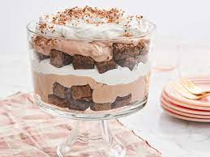

Chocolate Trifle

Description
A Chocolate Trifle is a decadent dessert masterpiece that layers rich flavors and textures into a delightful feast for the senses. It begins with a foundation of moist chocolate cake or brownies, cut into bite-sized pieces and layered generously at the base of a trifle dish or individual serving glasses. Next comes a velvety layer of chocolate pudding or mousse, adding depth and creaminess to each spoonful. As the layers build, a drizzle of chocolate ganache or syrup is delicately poured over the pudding, infusing every bite with an extra dose of chocolatey indulgence. Each layer is repeated to create a visually stunning dessert that promises layers of flavor and texture with every spoonful. To finish, a topping of whipped cream or chocolate shavings crowns the trifle, offering a final touch of elegance and richness. This dessert is perfect for gatherings, providing a spectacular centerpiece that satisfies even the most discerning chocolate lover's cravings.
Ingredients
For the chocolate cake or brownies (base layer):
1 box of chocolate cake mix OR 1 batch of homemade chocolate cake
Ingredients needed for the cake mix (e.g., eggs, oil, water) OR ingredients for homemade cake (e.g., flour, sugar, cocoa powder, baking soda, eggs, milk, oil)
For the chocolate pudding layer:
2 packages (3.4 ounces each) instant chocolate pudding mix
4 cups cold milk
For the chocolate ganache layer:
1 cup heavy cream
8 ounces semi-sweet chocolate chips or chopped chocolate
1 tablespoon unsalted butter
For assembly and garnish:
2 cups whipped cream (homemade or store-bought)
Chocolate shavings or sprinkles for garnish
Directions
Making a chocolate trifle is a delightful process that involves layering rich components to create a visually appealing and delicious dessert. Here’s a step-by-step guide to make a chocolate trifle:
1. Prepare the Chocolate Cake or Brownies
- Bake a chocolate cake according to package instructions or prepare homemade chocolate cake. Allow it to cool completely.
- Cut the cooled cake into bite-sized cubes or tear brownies into chunks. Set aside.
2. Make the Chocolate Pudding Layer:
- In a large mixing bowl, whisk together the instant chocolate pudding mix and cold milk until smooth and thickened.
- Place the pudding in the refrigerator to set while you prepare the other components.
3. Prepare the Chocolate Ganache:
- In a small saucepan, heat the heavy cream over medium heat until it just begins to simmer (do not boil).
- Remove from heat and add the chocolate chips or chopped chocolate to the hot cream. Let it sit for a minute to soften.
- Stir the mixture gently until the chocolate is completely melted and smooth. Stir in the butter until melted and combined. Set aside to cool slightly.
4. Assemble the Chocolate Trifle:
- In a trifle dish or a large glass bowl, start layering the ingredients. Begin with a layer of chocolate cake or brownie cubes at the bottom.
- Spoon a layer of chocolate pudding over the cake, spreading it evenly.
- Drizzle some of the chocolate ganache over the pudding layer.
- Repeat the layers until you reach the top of the trifle dish, ending with a layer of whipped cream.
5. Garnish and Chill:
- Garnish the top of the trifle with chocolate shavings or sprinkles for an extra touch of decadence.
- Cover the trifle dish with plastic wrap and refrigerate for at least 4 hours, or preferably overnight, to allow the flavors to meld and the dessert to set.
6. Serve:
- Before serving, remove the trifle from the refrigerator and let it sit at room temperature for about 10-15 minutes.
- Scoop servings into individual bowls or glasses, making sure to get all the layers in each serving.
Enjoy the layers of chocolatey goodness in each spoonful of this sumptuous chocolate trifle! It’s a perfect dessert for special occasions or any time you crave a rich and satisfying treat.